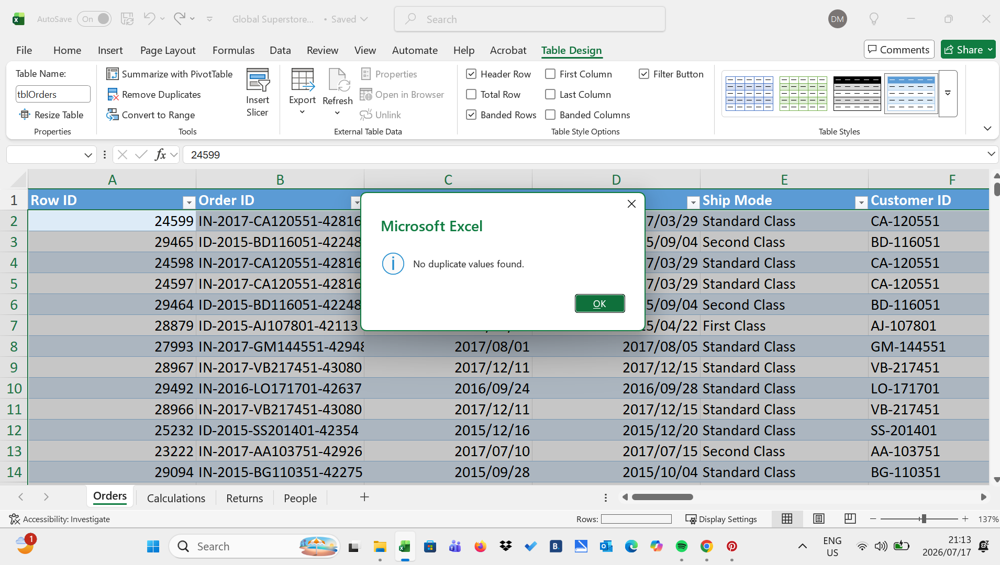
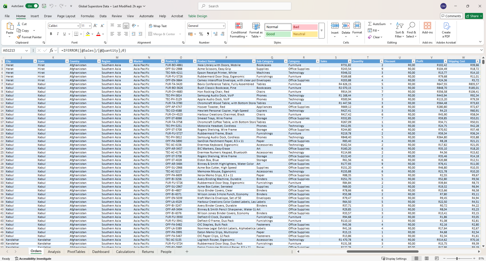
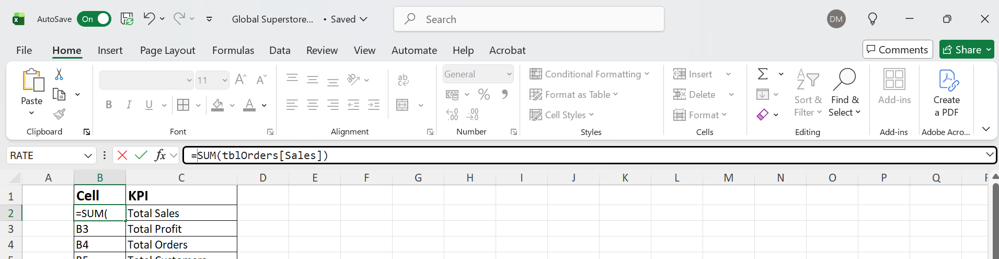
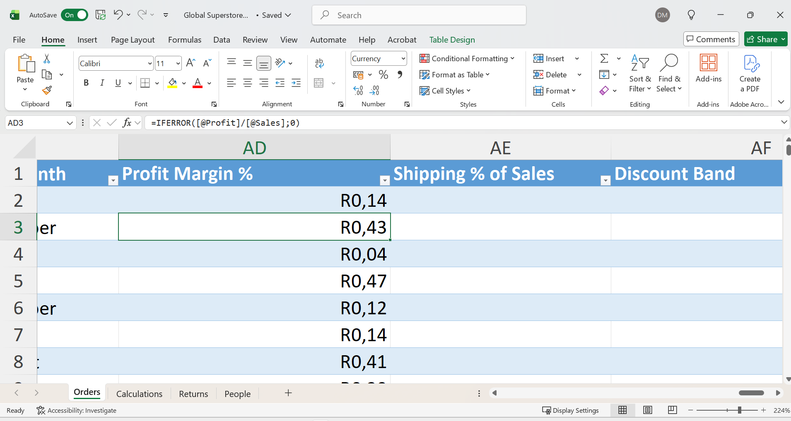
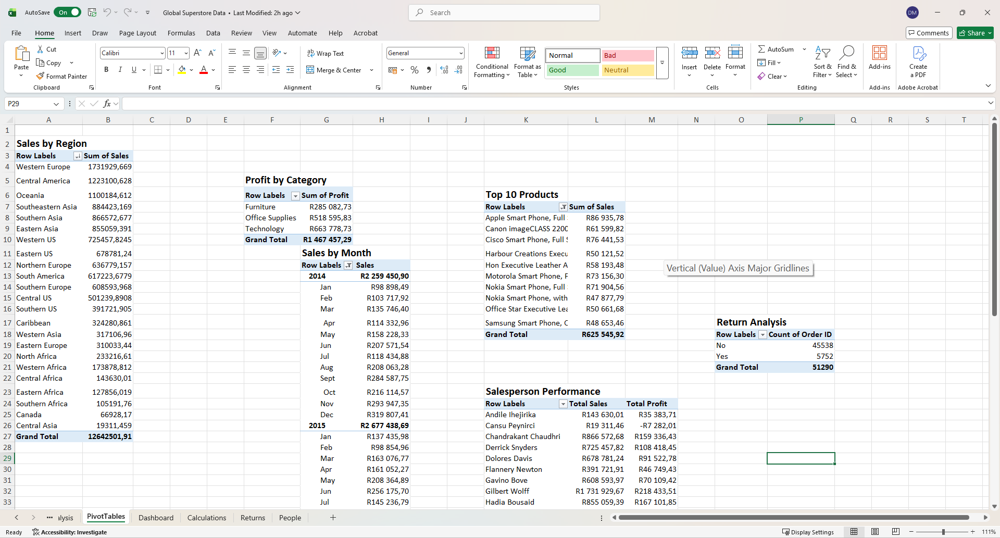
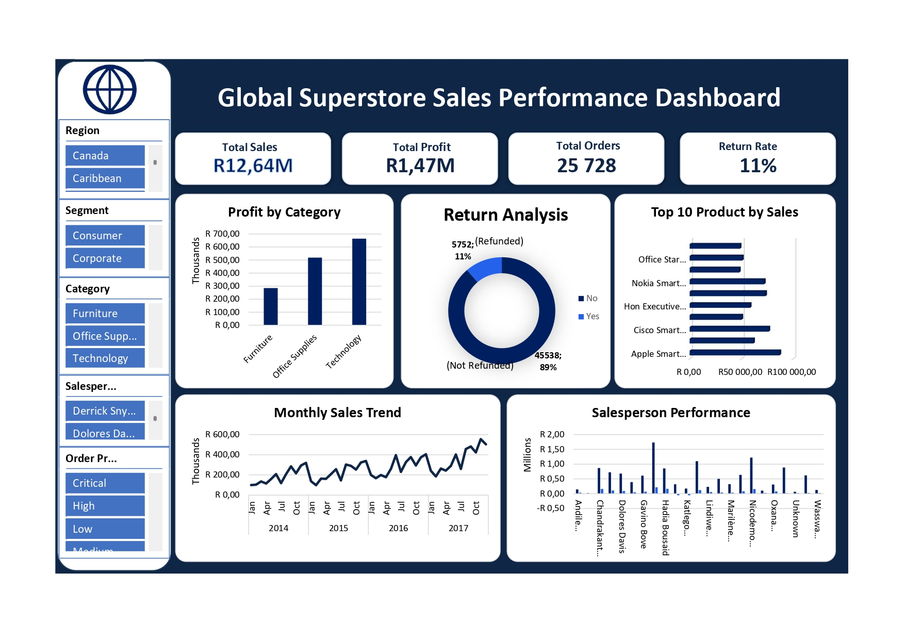

Case Study
Global Superstore Sales Performance Dashboard
An interactive Microsoft Excel dashboard developed using the Global Superstore dataset to analyse sales performance, profitability, customer trends, shipping efficiency, and regional performance. The dashboard combines advanced Excel formulas, PivotTables, PivotCharts, slicers, and timeline filters to support business decision-making.
Project Summary
This project was designed to provide business stakeholders with an executive-level view of sales performance across different regions, product categories, customers, and sales representatives. Interactive filters allow users to quickly explore trends and compare performance across multiple dimensions.
Tools Used
Dataset
- 50,000+ Global Superstore sales records
- 3 related tables (Orders, Returns & People)
- Regional and market information
- Customer and product details
- Sales, profit and quantity data
- Shipping methods and order dates
Business Questions
- Which region generated the highest sales?
- Which product category generated the highest profit?
- How did sales perform throughout the year?
- Which products generated the most revenue?
- Which sales representative achieved the highest sales?
- What percentage of orders were returned?
Data Preparation

Data Cleaning
The dataset was cleaned by checking for duplicate records, reviewing missing values, and ensuring consistent formatting across all tables. This improved the accuracy of the dashboard and analysis.

Preparing Excel Tables
The Orders, Returns, and People datasets were converted into structured Excel Tables to simplify analysis and support dynamic formulas and PivotTables.
Calculations

SUMIFS
SUMIFS was used to calculate total sales and profit based on multiple criteria such as region, category, and salesperson.

COUNTIFS
COUNTIFS calculated the number of orders, returned products, and customer activity, supporting KPI calculations throughout the dashboard.

IFERROR
IFERROR was applied to prevent formula errors from appearing in reports, creating a cleaner and more professional dashboard.
Pivot Tables

Sales Performance Analysis
PivotTables summarised sales by region, product category, and customer segment, helping identify the highest-performing business areas. Additional PivotTables compared profitability across categories, highlighted top-performing products, and measured salesperson performance.
Interactive Dashboard

The final dashboard brings together KPIs, PivotTables, PivotCharts, slicers, and timeline filters into an interactive report that enables users to analyse sales performance, profitability, customer trends, and regional performance from a single dashboard.
Key Insights
- The West region generated the highest overall sales revenue.
- Technology was the most profitable product category.
- A small number of products contributed a significant percentage of total sales.
- Sales increased during seasonal shopping periods.
- Some products experienced consistently high return rates.
- Interactive filters allowed stakeholders to explore trends across regions, categories and time.
Business Recommendations
- Increase investment in high-performing regions to maximise revenue growth.
- Focus marketing campaigns on high-margin Technology products.
- Review products with high return rates to improve customer satisfaction and reduce costs.
- Use seasonal sales trends to improve inventory planning and demand forecasting.
- Recognise top-performing sales representatives and provide additional support to lower-performing regions.